Travel
- 25 April 2017
- 21 March 2017
- 25 Feb 2017
- 21 Feb 2017
- 7 Feb 2017
-
| INDIA | US | MIDDLE EAST | JAPAN | FIJI
- 16 Jan 2017 Tamil Nadu
Most parts of Tamil Nadu's buildings have Dravidian influenced Architecture. Tamil Nadu has some Victorian Era buildings,
If you are from a colder place, the first thing you'll notice is that Tamil Nadu does not really has winters. Winter, snow and below 40 degrees temperature, none of that in Tamil Nadu. In Celcius, it's below zero. Some great facts about Tamil culture –– Sangam period serves as foundation of Tamil family, values, literature. They have worthy moral precepts, stories. However, these works are not popular in the West
Kodaikanal, Tamil Nadu, India.
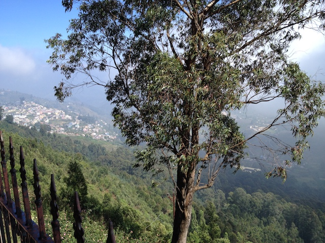
Kodaikanal is known as princess of hill station.
Hill station, is where we have a village near the top of a hill.
The Weather is around 70 degrees to 60 degrees.
My journey to Kodaikanal started, when I was in kindergarden -- My parents took me to Kodaikanal,
And I remember riding horses near the Lake. Another peculiar memory is Guna's cave -- there's been tragic accidents in that place. A group of 10 college kids went missing in it. It's a deep underground cave with no clear acess.
Now, they have shielded it with caves for public safety.
Short History: Kodaikanal slowly formed as a retreat place for Missionaries, Tamil and British elites in Tamil Nadu. Tamil Nadu has semi-arid weather, April - June is the hottest time of year. It goes up to 110 degrees, (43 Celcius).
Initially only 20 people settle around late 1800's, but now there's a lot of people in Tamil Nadu relocating to Kodaikanal. Of course, it's not as big as Florida for retirees.
As you can surmise, having been to Kodaikanal numerous times; It is one of my favorite places on the planet. If you plan to visit Tamil Nadu, I recommend staying in Kodaikanal for a week. Enjoy the perfect weather, scenery and forest.
Tirunelveli, Tamil Nadu, India.
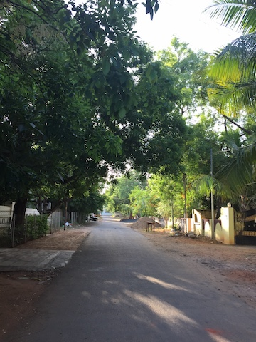
Tirunelveli has semi-arid weather.
Semi-arid is hot with 10-20 days of rainfall a year
It's a small town with about 500,000 people living in the district.
Nellaiappar Temple is the iconic symbol of Tirunelveli.
Another classic example of Dravidian architecture.
My first memory of Tirunelveli is near to Sarah Tucker College, Perumalpuram.
Founded in late 1800's for Woman's education -- It has served the community of Women in Tirunelveli district.
There's a popular destination called, Coutrallam.
It has waterfalls, where people often go for a short retreat.
I've been to coutrallam so many times, And I fall in love with majestic water-fall.
Education:
Tirunelveli has excellent middle and high schools. They call it the Oxford of South India.
Most of the credit goes to early Christian missionaries who founded these schools.
Other than that, there's not a complete history of Tirunelveli.
If you find something let me know.
Coimbatore
Coimbatore has 70 degrees weather, and rains often.
However, the city has numerous migrants from other parts of India.
You might bump into someone who speaks Hindi
Coimbatore also has great number of schools, and institutions.
Closer to Coimbatore -- there's Ooty, which is smaller than Kodaikanal.
I've visited the city three times. My memory of coimbatore is the Railway station. It is peculiar, has an underground walk-way.
Chennai Madras
Chennai is probably bigger than NYC in terms of population, and is capital of Tamil Nadu. It's hot, humid and has busy traffic.
I would say NYC's traffic is nothing compared to Chennai.
During my stay in Chennai –– I observed how quickly Chennai was growing economically.
It's interesting to visit a crowded city if you are young, And Chennai has lot of things to do.
If you are into History, I'd recommend checking out all the English East India company's history in Chennai.
A lot of people in Chennai are proud of their city. It was formerly called as Madras.
The first time, I visited Chennai was in 2008 during high school vacation.
My first memory of Chennai is guindy railway station, pallavaram station.
After that, I moved to Chennai for four years.
Madurai
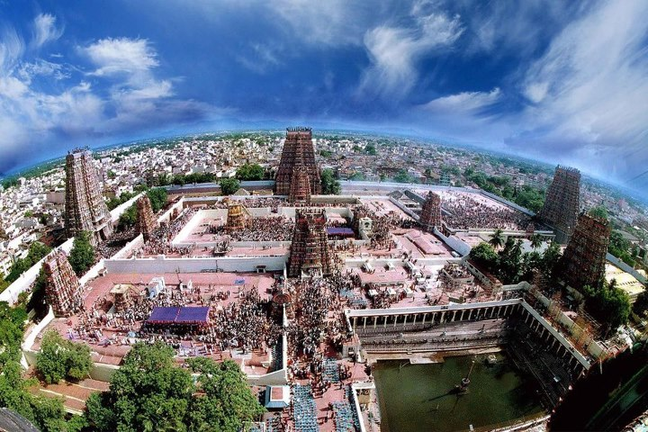
Madurai is 150 kms from Tirunelveli. The City of Madurai's icon is Meenakshi Amman Temple, if you have not seen it.
I'd say Dravidian Architecture is unique and has stone-cut temples. My peculiar memory of Madurai is crossing the Mattuthavani bus stand. Madurai is considered to be part of Southern Tamil Nadu, there's a divide in accent/slang between Northern Tamil Nadu and Southern Tamil Nadu.
Trivanduram, Kerala
Trivanduram, I visited it from my early schooling days. It's similar to other Tamil Nadu towns, cities. The Weather is not as hot as Tirunelveli. It's around 80 degrees. People speak Malayalam in Kerala. If you have not noticed, people in India speak different language, depending on the state.
Kottayam, Kerala (2010)
Kottayam is greener and I enjoyed my time visiting on a train.
People speak Malayalam.
New Delhi
I was so much excited to be in New Delhi.
And as soon as I got from a train, I could see people from all over India were there.
Mostly people from Northern parts of India
Remember, India is diverse as Europe.
And that makes India special. India was doomed to fail after the British had left,
however -- India is still going on as a Nation. Anyway, I noticed
clean/good areas of New Delhi were near consulates,
and I must admit they had poorer parts too in New Delhi.
A lot of the signs in New Delhi were in Urdu (remember), this was surprising.
I think, it goes back to the Mughal Empire.
I visited some of the bazaars in New Delhi, they were crowded with tons of people.
Infact, I was traveling alone so I couldn't get much feedback from locals.
I wish -- I had stayed there for a while to learn about the place.
Gurgaon, Haryana.
From New Delhi, there's trains to Gurgaon. It is similar to New Delhi, but new thing I noticed was that Northern India has rickshaws,
and they called their three-wheeled transport vehicle as fat fatia. Probably in Southern India,
I have not seen them, and people in Tamil Nadu called them as Autos.
Tajmahal, Agra.
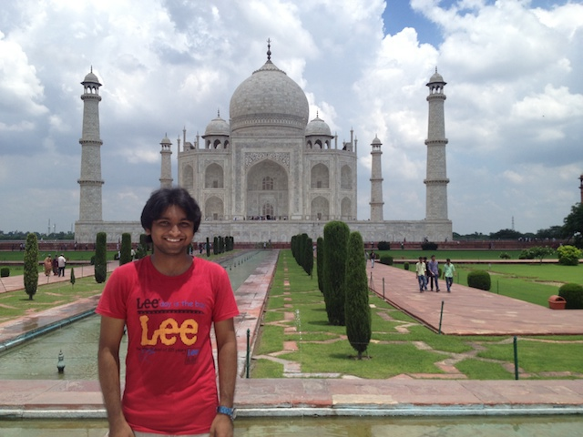
What can I say about the Taj Mahal? Majestic architecture, grandeur, opulent, symbol of Mughal Empire.Taj Mahal is a must-visit in India
Infact, if you love history or architecture -- Then you'll fall in love with it.
Middle East
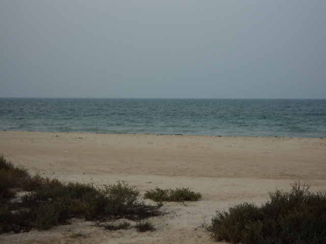
In fact, this place was fascinatingly different.
The first difference is clothing style, next is weather.
I couldn't research much on the history of it because I couldn't talk to the locals.
Although, I must warn people who visit Middle East for the hot weather. It gets as hot as 122 degrees.
I loved the Desert, it looks different than Europe or North America.
Fiji
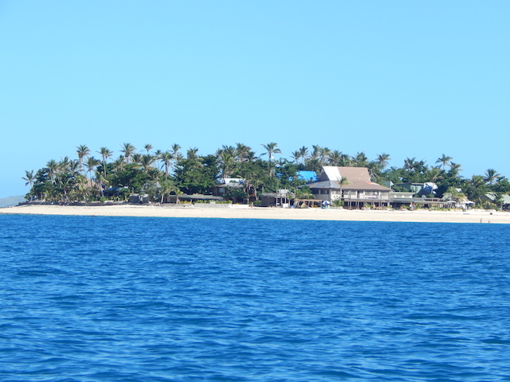
Fiji is a great place to visit, you would love the weather in summer.
People are friendly. Fun fact, there are Indians in Fiji, who have assimilated to Fijian culture.
Fijians would belong to Islander culture.
Thailand
Bangkok Pattaya
Thailand has friendly people. A lot of travel and tourism in Thailand.
The first you might notice in Bangkok is that it's a huge city similar to NYC. Bangkok has dozens of Buddhist temples. I don't think Thailand has winters, they have a lot of things to do in Thailand.
North America
These are some of the states, that I've visited. One important factor is, if you prefer weather to be a huge factor, then most of the colder states won't attract you. Unless, you are from Russia or Iceland.
Illinois
Rockford, Illinois
The first thing you'll notice is Chicago's airport is huge, and the parking lots go on forever
Illinois had bad roads. Winters are brutal in Illinois.
Wisconsin
Madison, Wisconsin
Wisconsin had good roads, compared to it's neighbour Illinois.
Rhode Island
University of Rhode Island
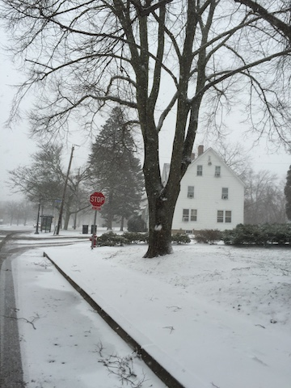
Blizzards are common in North-East. Rhode Island is near to Boston.
New York City
The most diverse city on Planet.
There's plenty of things to do in NYC, and the city never sleeps
You can find all kinds of food in NYC, literally from any country on the planet
I visited Randall's Park in NYC, And also attended a friend's wedding in Central Park.
Florida
Orlando, Daytona
Florida –– to a northerner (U.S), the buildings look different.
The Vegetation, plants, weather is tropical. Sunny weather, and lot of South American food.
West Virginia
Princeton, West Viriginia
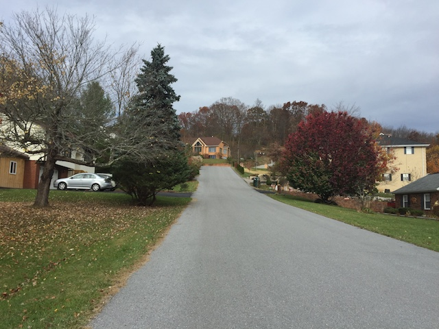
West Virginia is considered rural place, but I might say -- we can't have it all in a state. Either you have too many people, or less. West Virginia has winters, but they're not as a cold as North-East of America. The Airport (Charleston) is small, the city is considerbly small and peaceful. If you like small places, with less people, you might enjoy it unless, you can't stand rural places.
California
I've visited San Fransico and I must admit, it had wonderful weather. Pretty much most of the people in the world, have heard about California.
Texas
"Everything is bigger in Texas"
Texas has similar weather to Southern India. A lot of immigrants, the first thing, I noticed in Texas was the airport had Bush's name. Other than that, there's a lot of mexican cultural influence in Texas. Texas is huge, it takes a couple of days to drive around the state. They say, they have ranches as big as Rhode Island.
When I was in Houston, Texas. I loved how it had lot of authentic mexican restaurant. I entered one Mexican restaurant, and I was the only person who wasn't from Mexico. If you are fan of rice, or any asian food; You'll probably like it.
Oregon
Portland, Oregon is similar to North-East. However, Oregon's coastline is distinct and beautiful. I visited Newport, Oregon and found coastline to be picturesque.
Massachussets
Massachussets is the intellectual hub of America. It has most of the World's top universites with four seasons. If you come from Southern hemisphere of the Globe, then Mass will expose you about cold weather. You are in for a weather shock, If you are below the equator. Make sure, you understand the weather and culture.
New Hampshire I visited a Ski-resort in New Hampshire. First thing is that New Hampshire has a lot of trees, more than bordering states of Massachussets and Rhode Island. There's no sales taxes in New Hampshire.
Connecticut Connecticut is cold as other New England states. It takes only 40 minutes from Rhode Island to reach Connecticut. Similar to Massachussets, I love the fall weather in Connecticut. I first learnt about Connecticut in Middle School. I remember opening a giant Atlas Encyclopedia, and learning states of America.
Content and design by Rick Rejeleene Some rights reserved.
Powered by Github
Contact the webmaster.

Welcome to my travels page.
Recently, I visited North Carolina. I was in Charlotte and Ashville. Ashville is an hour drive from Charlotte, NC. Even though, it's April, I couldn't make sense of the weird weather. Quick note to someone, who is from tropics or a place, where there is no change in weather. This might seem trivial, but weather is important and part of North American life. I noticed it had bright sunlight, and then quickly lots of rain and gloomy weather. It seems that Billy Graham Library is popular destination. I noticed outside of the Airport, lot of advertisement for his Library. Also, the airport was expanding with constructions and things seem to be out of place. I traveled for almost 15 hours from Providenc to North Carolina, it is exhausting, if you do not get enough sleep and sunshine.
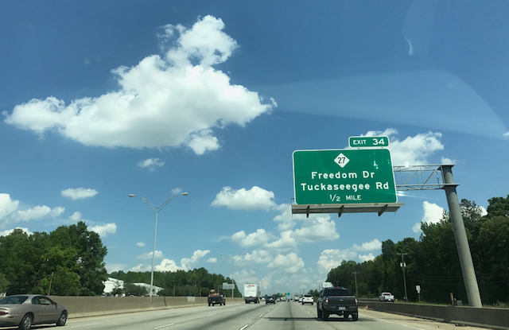Recently, I visited Westerly, Rhode Island. It's on the border of Conneticut. Most of the architectures resembles colonial –– New England style. The place, where I stayed had three floors (American's count ground floor as first floor). Meanwhile, other countries might not do it in the same way. A small interesting point to observe. A Big issue in New England is heating, it's a big deal, and if a house doesn't have a good heating; It means you better prepare for hypothermia. And now you know, why early settlers freezed and starved to death.
I'm in New Hampshire, It's been three years and it's refreshing to re-visit. Skiing is exciting, And a lot of people in New England visit NH for skii resorts. As we were driving, we could not see the roads. Fog was above the roads, and it was difficult to drive at Night. GPS helped us to reach our destination. I loved skiing but it took a lot of energy of me. If you love Snow, then come visit New Hampshire. The State's motto is, "Live free or die."
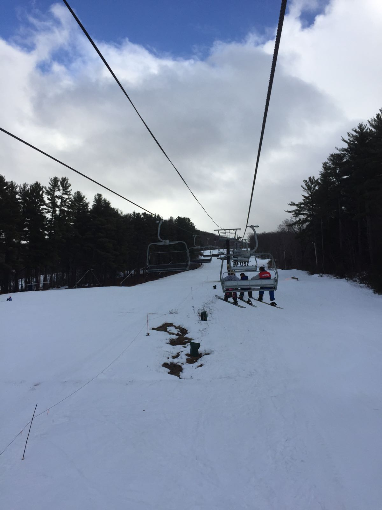Florida was wonderful trip. As you know, lots of sunshine and warmer people. This scence was my highlight of the trip, I took a plane from Orlando, Florida where it was around 80 degrees. And, then I landed in Providence, Rhode Island -- It was 20 degrees covered in Snow. A Day with bright sunlight and snow. Can you imagine it?
A Group picture with people that I met in Florida.
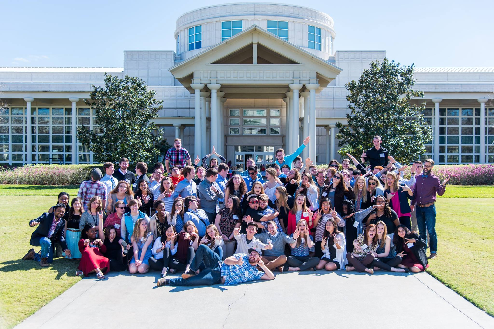I'm travelling to Florida soon -- And, most New Englanders love going to Florida. The Weather becomes gloomy, cold in New England, that a lot of people feel frustrated with it. Less Sunlight makes people's mood change, and I understand why people want to retire in Florida. The Last time, I was in Florida -- I quickly admired the Spanish Influence, architecture of buildings. America is truly a melting pot of cultures, However it takes a generation or two for immigrants to get assimilated. There must be millions of sub-cultures within the United States. If you have never been to the United States, it is going to be hard for you to understand. If you are moving to America, you are not only bringing yourself, but your habits, thought, tradition, religion into this vast country. Try to reflect the differences, and learn from each other. One thing, that helps you to learn about culture is their history.
12 Jan 2017
Travelling expands your horizons -- However, living in another country or place is different from travelling. I have travelled to a wide variety of places. From Asia, Middle East to North America. I'll post my thoughts, history and facts about these places. If you have any questions or feedback, please do email me. Somethings you should notice about your ownself, the place you grew up is going to form the base perspective on things. You visit another place, it adds up, therefore your base perspective would always be with you. If you grew up in Europe, you'll have your frame of reference to your European context. When you move to another country -- it has to realign to the new culture or country. This helps you to understand your own cultural roots in a deeper way, because you can reflect the differences. It's good to ask questions, and learn from new culture. I think, there's a lot more on communication among cultures.
Most of my early travels are in parts of Tamil Nadu. People speak Tamil and English in Tamil Nadu
The State, where I grew up. I've found that one culture can learn from another rather than looking down on them.
Most of the time, people misunderstand cultures -- Seriously, most people have assumptions about other cultures.
Do not assume, rather ask questions and explore the differences. Indeed, there's a lot of history,
that we all need to learn from each others cultures.